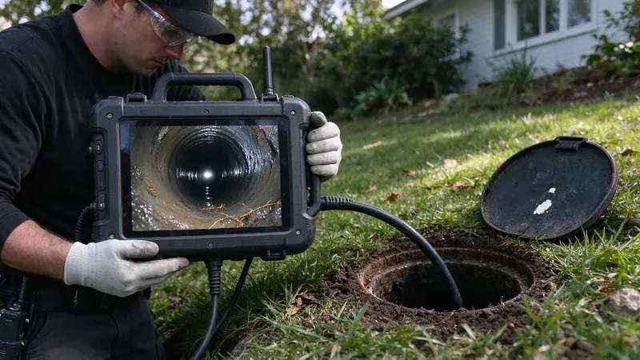

What a Standard Home Inspection Misses
A general home inspector runs the faucets and flushes the toilets, and that is about where the drain check ends. The sewer lateral, the pipe from the house to the public main or septic tank, never gets looked at. It is also the most expensive pipe on the property to replace. Sellers rarely know its condition.
Our crews at BWM Plumbing inspect lines for buyers across Massachusetts, and the camera work rarely takes more than an hour. The fee is small next to a replacement. An empty house is the biggest risk, since a broken line can go unnoticed for months when nobody is using the drains.
Tree roots and shifting fill around old clay or cast iron sewer laterals are a common cause of backups in established neighborhoods.
Older laterals were often clay tile or cast iron, and years of shifting soil and growing roots break both of them down. Clay joints separate and let roots in. Cast iron rusts along the bottom until the waste is running over dirt instead of pipe. Neither shows up from inside the house until there is a backup.
What the Camera Shows
The camera goes in through a cleanout or a pulled toilet and travels the full length of the line out to the main. A transmitter in the camera head lets us mark the location and depth of anything we find from the surface. We give you the video. Here is what we look for.
- Root intrusion at joints
- Bellies, or sags, that hold standing water
- Cracks, breaks and offset joints
- Corroded or collapsed cast iron
- Orangeburg pipe that has started to flatten
- Grease buildup or debris from a past backup
Routine pumping every few years and keeping heavy vehicles off the drain field protect a septic system and avoid costly replacement.
On a septic property, the camera also shows the line from the house to the tank. That run gets missed often. Roots or a belly near the tank inlet show up often, and pumping the tank does nothing for them. Ask the seller for the last pump-out date and any drain field records. The drain field needs its own septic inspection, since a camera cannot judge it.
Inspection Cost Versus Repair Cost
Sewer line repairs range from a single spot repair to a full lateral replacement under the driveway. A spot repair might be a day of work, while a full replacement under concrete can take a week and a lot of restoration. After closing, the bill belongs to you. Before closing, it is a negotiating point.
Buyers use the video in a few ways. Some ask for a price reduction or a repair credit at closing. Others want the seller to have a licensed plumber fix it under permit before closing, and then they run the camera again to check the work. The video is evidence.
Scheduling an Inspection
Book the camera inspection during your inspection period, not after. The inspection window in most contracts is short, often 7 to 10 days, so get on the schedule early. You can reach BWM Plumbing at (857) 335-4894. It helps to have the address and the build year when you call. We can usually get a camera out within a couple of days, and we send the video to you and your agent the same day.
Need a licensed plumber in Massachusetts?
BWM Plumbing answers 24/7 and offers same-day service across Massachusetts.